정밀의료 연구에서의 멀티오믹스 분석 전략과 실제 적용
차라투 분석 사례 및 공단·심평원 데이터 연계 중심
2026-06-13
목차
I. 차라투 소개 — 누가, 무엇을 하는 회사
II. 차라투가 수행한 멀티오믹스 분석 — 암·정신과·피부·호흡기 7개 사례
III. 공단·심평원 데이터 연계 — 200만명 규모 연구 경험
IV. 뇌졸중 연구 협업 제안 — 바로 적용 가능한 분석 전략
차라투 주식회사
국내 유일 의학연구지원 전문기업. 대표 예방의학 전문의 · 수학올림피아드 특기자 출신으로 임상·유전체·오믹스 분석 전 영역을 아우릅니다
수행 범위
- 연구 설계·샘플수 계산부터 논문 투고까지 end-to-end
- 12시간 내 응답 보장, 200편+ SCI 논문 지원
- 한림대·인제대·삼성서울병원 등 다수 기관 연단위 계약
오믹스 수행 경험
- GWAS, PRS (PRScs · PRScsx), scRNA-seq
- Nanostring spatial transcriptomics
- Proteomics · lipidomics · methylation
- xMWAS 기반 다층 네트워크 통합
22만+
R 패키지 다운로드
200+
SCI 논문 지원!!!
8건
국가 R&D 수행
팀 구성 — 정규직 5명 + 인턴 7명 (의학·통계·개발 전문인력)
왜 멀티오믹스인가 — 단일 오믹스의 한계
한계
- GWAS는 표현형 변이의 2~8%만 설명
- 단일 유전자(CYP2C19) 변이는 약물 반응의 ~12%만 설명
- 정적 ‘상태(state)’ 관찰 → 동적 ‘과정(process)’ 규명 필요
통합이 필요한 이유
- 인과성 규명 — MR, pQTL/eQTL
- 약물 반응 이질성 — 동일 변이 내 반응성 차이
- 치료 표적 도출 — 단백체·대사체 수준
오믹스 계층 (DNA → RNA → Protein → Metabolite)
- Genomics / Epigenomics
- Transcriptomics — scRNA-seq, spatial
- Proteomics — Olink PEA
- Metabolomics / Lipidomics
통합 기법 — MOFA · xMWAS · Mendelian Randomization · QTL · EWAS
예시: 단일 오믹스 결과 vs 다층 통합 결과
Single-omics GWAS / DEG / EWAS 결과 예시
-log10(P) Effect size IL6 CRP
n = 1,248Case-control
FDR < 0.0517 hits
Top pathwayInflammation
Feature Effect Adj.P
IL6 beta = +0.42 0.004
CRP beta = +0.31 0.011
CXCL8 beta = -0.27 0.019
단일 계층 분석은 “무엇이 유의한가”를 선명하게 보여주지만, 오믹스 계층 간 연결 구조와 환자별 이질성은 상대적으로 제한적으로 드러납니다.
Integrated 선택형 멀티오믹스 통합 뷰 예시
Genomics Transcriptomics Proteomics Metabolomics Outcome
CohortBOMICS / Stroke / Validation
FilterResponder · FDR < 0.05 · Module 3
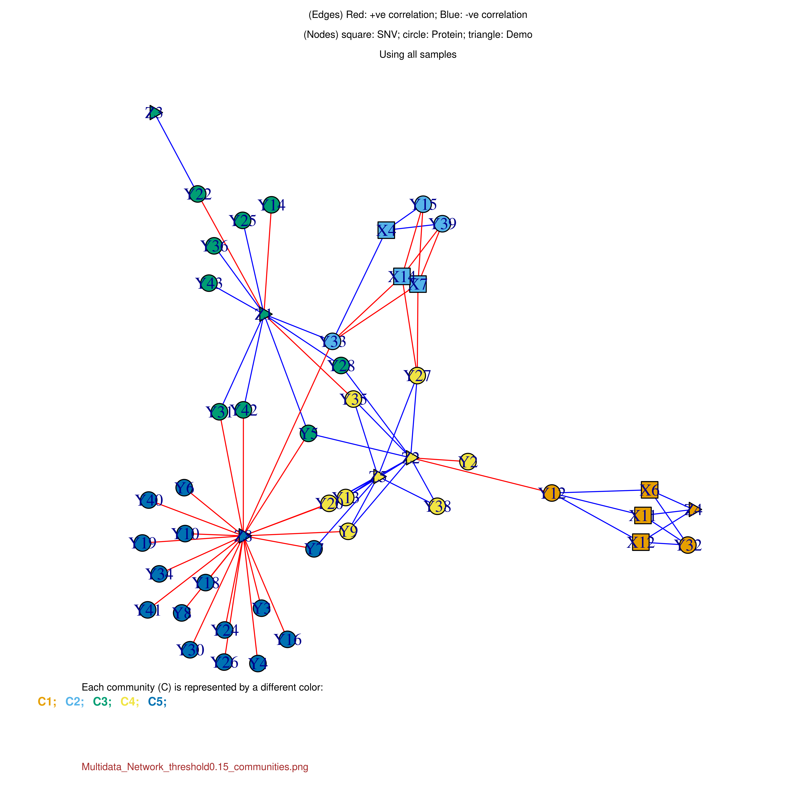
CommunityAPOC1-CRP module
Latent factorInflammation axis
InteractiveLayer-on/off selection
분석 전략 5단계 프로세스
STEP 1 연구질문·데이터 정합화 임상 질문 정의, 대상자 기준 확정, 결측/이상치/라벨 정리
▶
STEP 2 코호트 정의·기초 비교 군 정의, baseline 비교, 교란 가능성 점검
▶
STEP 3 핵심 통계모형 적용 회귀·생존·반복측정·고차원 분석을 질문별로 적용
▶
STEP 4 검증·민감도 분석 하위군/외부검증/다중검정 보정으로 결과 안정성 확인
▶
STEP 5 해석·산출물 전환 임상 해석 중심 결과표/그림/발표자료/웹앱으로 전환
차라투 차별점 — 통계모형 결과를 임상 질문에 맞는 해석 가능한 근거(효과크기·위험도·분류성능)로 전환하고, 표·그림·웹앱까지 같은 흐름으로 제공합니다.
Case 1. 양극성장애 환자 약물 치료 반응 예측 및 신호 분석
삼성서울병원 정신건강의학과 백지현 교수님
분석 데이터
- 양극성장애 환자의 임상정보, 약물 반응 점수, proteomics, SNP, PRS을 포함한 다각적 멀티오믹스 데이터.
- Lithium과 Valproate 반응을 연속형 점수와 반응군 형태로 정의, 예측 성능 평가와 분자 신호 해석을 동일 프레임 내에 연결.
분석 목표 및 통계 분석
- 약물 반응 차이를 설명하는 임상·분자 결합 신호 탐색 후, 반응 예측에 기여하는 feature 축 도출을 위한 분석 설계.
- Table 1, linear/logistic regression로 기본 차이를 정리한 뒤, SNP-level GWAS, network analysis, LASSO, Random Forest로 확장 진행.
결과 및 산출물
- 반응군 비교표, SNP-단백체-임상 통합 네트워크, 변수 중요도 기반 예측 모델 구축,
[75% train / 25% test]분할과[10-fold CV]기준의 성능 비교 체계 정리.
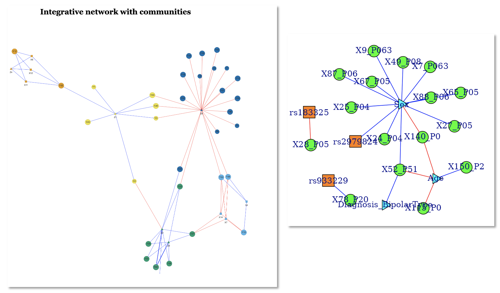
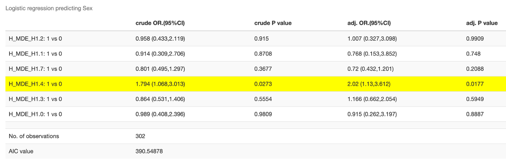
Case 1. 양극성장애 환자 약물 치료 반응 예측 및 신호 분석
삼성서울병원 정신건강의학과 백지현 교수님
분석 데이터
- 한국인 PRS summary statistics, phenotype, eQTL/mQTL, Brain-mMeta를 통합한 멀티오믹스 데이터.
- 단순 예측 score 비교를 넘어, lead SNP와 기능 후보 유전자를 다시 해석하기 위한 post-GWAS 구조 중심 데이터셋.
분석 목표 및 통계 분석
- ancestry-informed PRS 재산출을 통한 예측력 재점검 후, 기능적 근거가 더 설득력 있는 SNP-유전자 축 도출을 위한 재해석.
- PRScs, PRScsx로 trait별 score를 산출하고 logistic ROC로 성능 비교, 이후 SMR/HEIDI 기반으로 대안 SNP와 기능 후보 재평가.
결과 및 산출물
- PRS 비교표와 기능 후보 SNP 요약 자료를 정리하고, SLC25A12 gene-based SMR은
p_SMR = 0.381로 강한 지지 근거가 제한적이므로 대안 SNP 비교 중심의 해석.
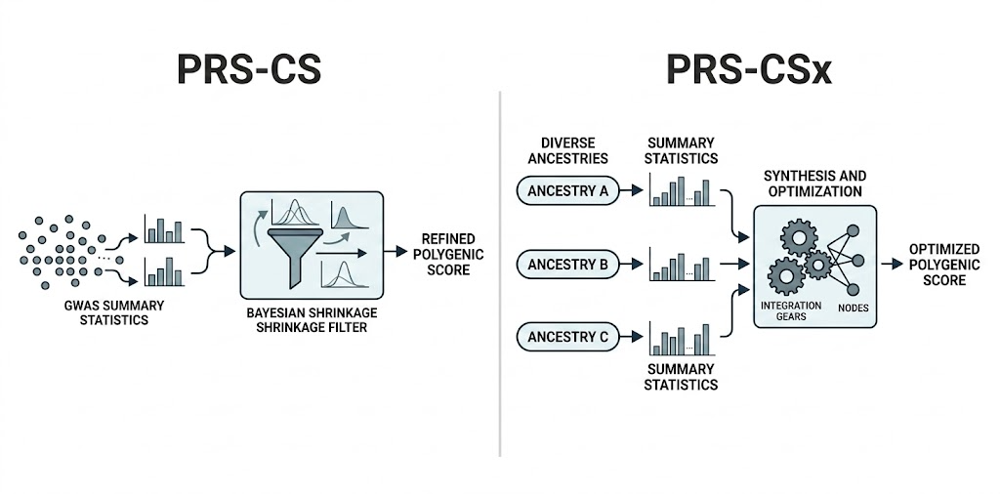
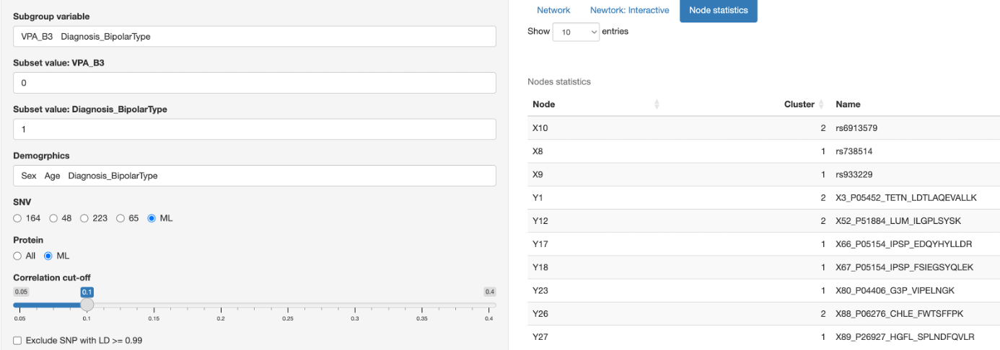
Case 2. 소아 아토피성 염증 피부 지질체-전사체 통합 분석
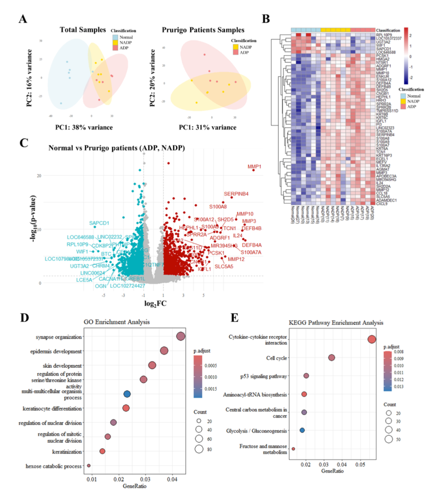
강남성심병원 피부과 김혜원 교수님
분석 데이터
- 소아 아토피 피부 lipidomics, 부위 A/B/C 정보와 임상 중증도 지표가 함께 정리된 site-specific 통합 자료.
- 이후 sensitive skin, prurigo 데이터셋으로 확장, 질환별 차이와 공통 lipid 패턴을 비교 가능한 프레임으로 구성.
분석 목표 및 통계 분석
- 염증 반응과 연결되는 lipid axis 탐색 후, 부위별 변화와 질환 간 공통 signature 도출을 위한 다층 비교 설계.
- fold-change와 limma + empirical Bayes 기반 차이 검정을 우선 수행하고, BH-FDR, Spearman correlation, PCA/UMAP로 신호를 단계적으로 정리.
결과 및 산출물
- 부위별 lipid fold-change 요약표와 발표용 Figure 세트를 정리하고, 3질환 통합 자료에서는 unique lipid 248개 중 18개 공통 species 확인으로 질환 간 공통 축 제시.
Case 2. 소아 아토피성 염증 피부 지질체-전사체 통합 분석
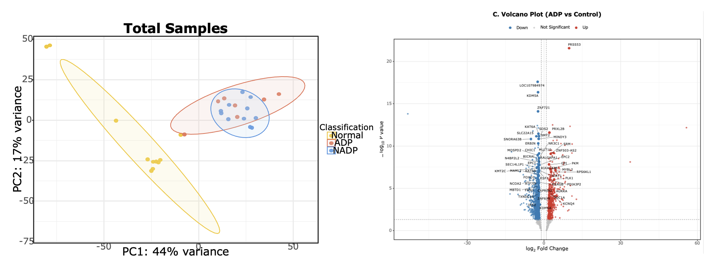
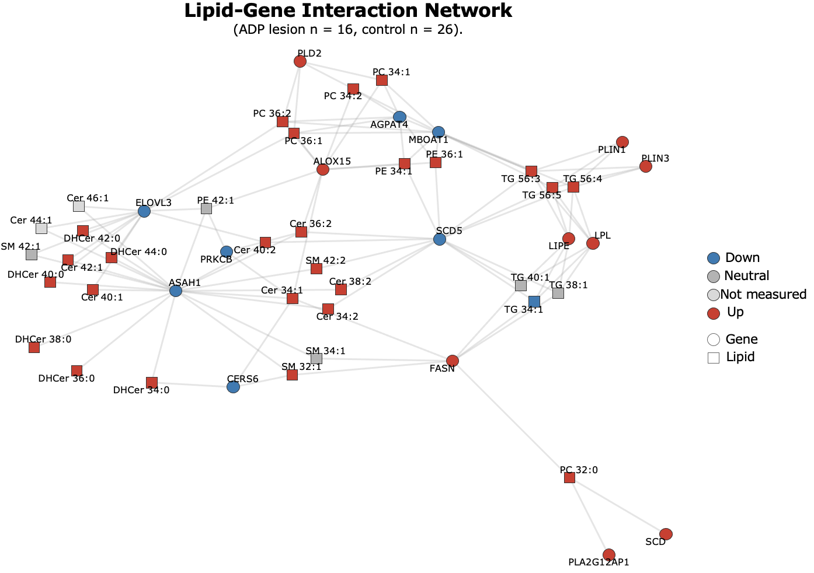
강남성심병원 피부과 김혜원 교수님
분석 데이터
- transcriptome 29샘플, lipid-matched subset, 염증·섬유화 후보 유전자 세트를 함께 묶은 multiomics 확장 자료.
- 피부 표면 lipid 변화와 전사체 수준 염증 경로를 직접 연결해 볼 수 있도록 구성한 matched analysis 자료.
분석 목표 및 통계 분석
- lipidomics에서 관찰된 변화축을 transcriptome과 연결한 뒤, 염증·장벽 관련 후보 pathway 재정렬을 통한 multiomics 근거 보강.
- DESeq2 기반 DEG 산출 후 VST PCA, GO/KEGG enrichment, BH-corrected correlation을 통한 lipid-gene 연결축 재평가.
결과 및 산출물
- 논문용 Figure 1~5 세트와 multiomics correlation 패널을 정리하고,
LAD vs Healthy비교에서는[FDR \< 0.05]유전자 3개 확인 및 후속 검증 후보군 압축.
Case 3. STING1-lysosome 발현량 난소암 환자 생존 분석
일산백병원 진단검사의학과 김지예 교수님
분석 데이터
- 내부 GeoMx spatial transcriptomics와 외부 TCGA/GTEx 난소암 자료를 함께 사용한 생존·분자 통합 자료.
- 단일 유전자 비교를 넘어, STING1-lysosome 관련 245개 유전자 모듈까지 확장 가능한 구조라는 점이 핵심 특징.
분석 목표 및 통계 분석
- STING1-lysosome 축의 예후 연관성 탐색 후, 모듈 수준 재배선과 외부 코호트 검증을 통한 기능 후보 도출 목적의 분석 설계.
- Kaplan-Meier, Cox로 예후 신호를 점검한 뒤, DESeq2, GO/KEGG/PPI, eigengene correlation, paired Wilcoxon으로 모듈 수준 해석을 확장.
결과 및 산출물
- 생존곡선, volcano, module network, eigengene correlation 구축, PFS는 event 부족으로 제한하여 OS 중심 해석과 외부 후보유전자 검증 축 명확히 정리.
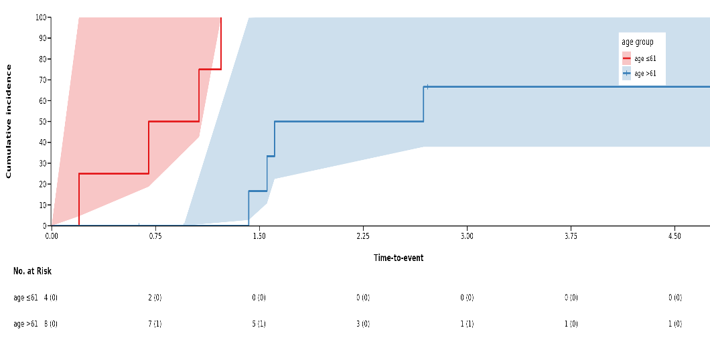
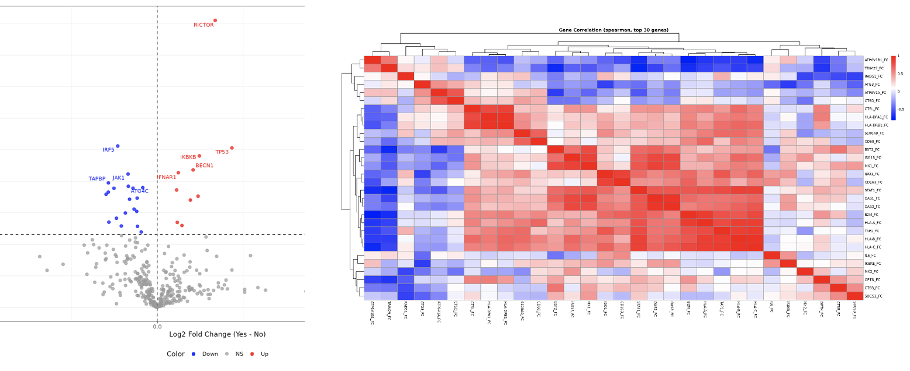
Case 4. COPD 환자 사망 연관 SNP 탐색을 위한 GWAS 분석
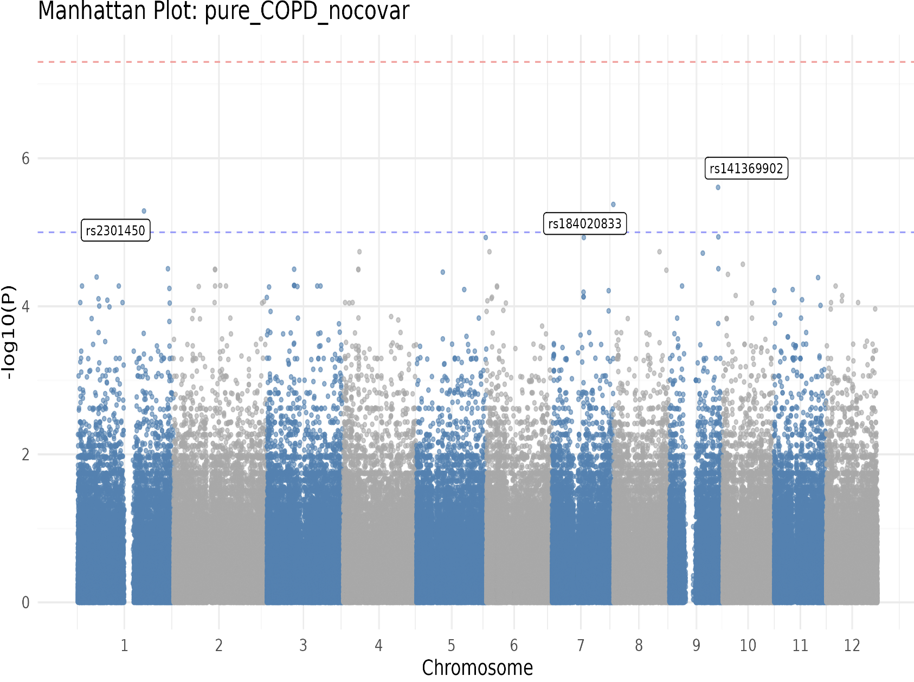
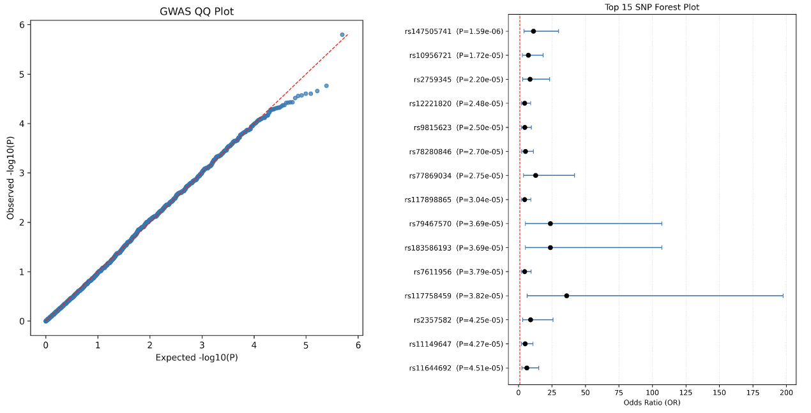
동탄성심병원 호흡기내과 송진화 교수님
분석 데이터
- KOCOSS COPD 코호트 중 SNP 데이터가 있는 환자 대상, 임상 기본정보와 mortality outcome을 통합한 유전연관 분석 자료.
- 전체 코호트뿐 아니라
pure_COPD,TB_COPD,Asthma_COPD,BE_COPDphenotype별 하위군을 나눠 subtype-specific signal 탐색.
분석 목표 및 통계 분석
- COPD 환자의 mortality 연관 유전변이를 탐색, 임상 phenotype에 따른 신호 변경 탐색을 위한 subtype-specific GWAS 설계.
- Table 1와 결측률 점검, PLINK logistic GWAS를
pure_COPD,TB_COPD,Asthma_COPD,BE_COPD하위군별 반복 수행, covariate-adjusted model을 통해 age, sex, BMI, baseline FEV1 보정 결과 통합 비교.
결과 및 산출물
- phenotype별 baseline 특성표, 보정 전후 GWAS, top SNP 요약표 정리 및 하위군별 signal 비교를 위한 Manhattan plot 도출.
- COPD 아형별 mortality-associated SNP 후보를 분리 후 해석 가능 구조를 확립, 후속 replication 또는 기능 해석을 위한 lead SNP 정리.
Case 5. 방광암 및 폐암 진단 바이오마커 모델
시선바이오머티리얼즈 연구팀
분석 데이터
- 방광암 methylation marker 자료와 폐암 MPR panel, 외부검증용 test set을 함께 사용한 멀티오믹스 데이터.
- 원 marker 값뿐 아니라 control 기준 percentile feature를 추가 생성.
분석 목표 및 통계 분석
- 적용 가능한 diagnostic marker 조합 탐색 후, 설명 가능한 기준값과 배포형 예측 도구까지 연결하기 위한 모델링 설계.
- ROC/AUC, logistic regression으로 기본 성능을 확인 및 percentile thresholding, 10-fold CV, LASSO, Random Forest 결합, 후보 모델 압축.
결과 및 산출물
- ROC 패널, cutoff 기반 모델, 배포형 예측 앱 연결, AUC와 best-threshold, sensitivity/specificity, PPV/NPV,
95% sensitivity 기준 specificity제시.
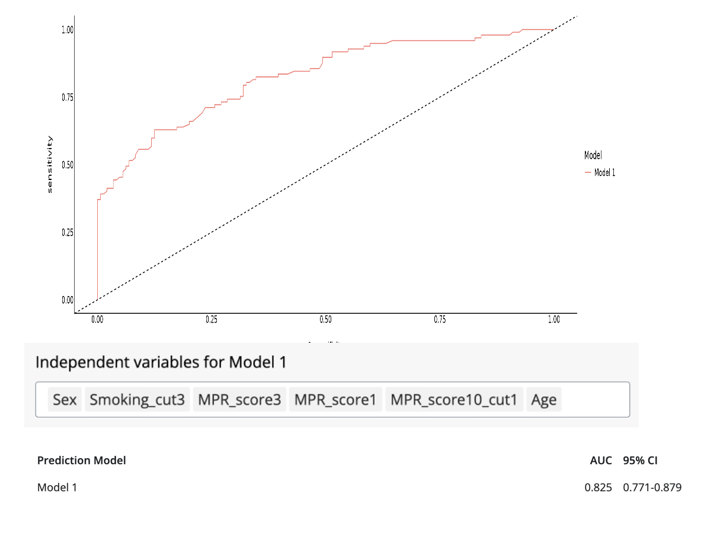
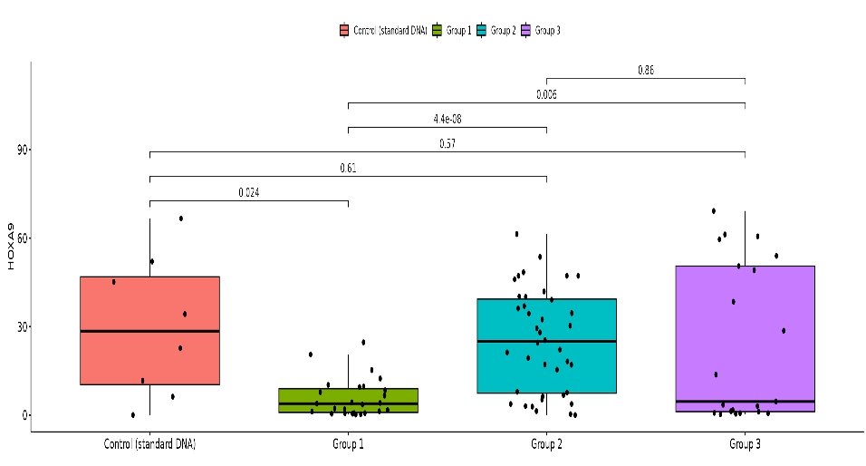
Case 6. 직장암 수술전 항암방사선용법 반응 유전자 분석
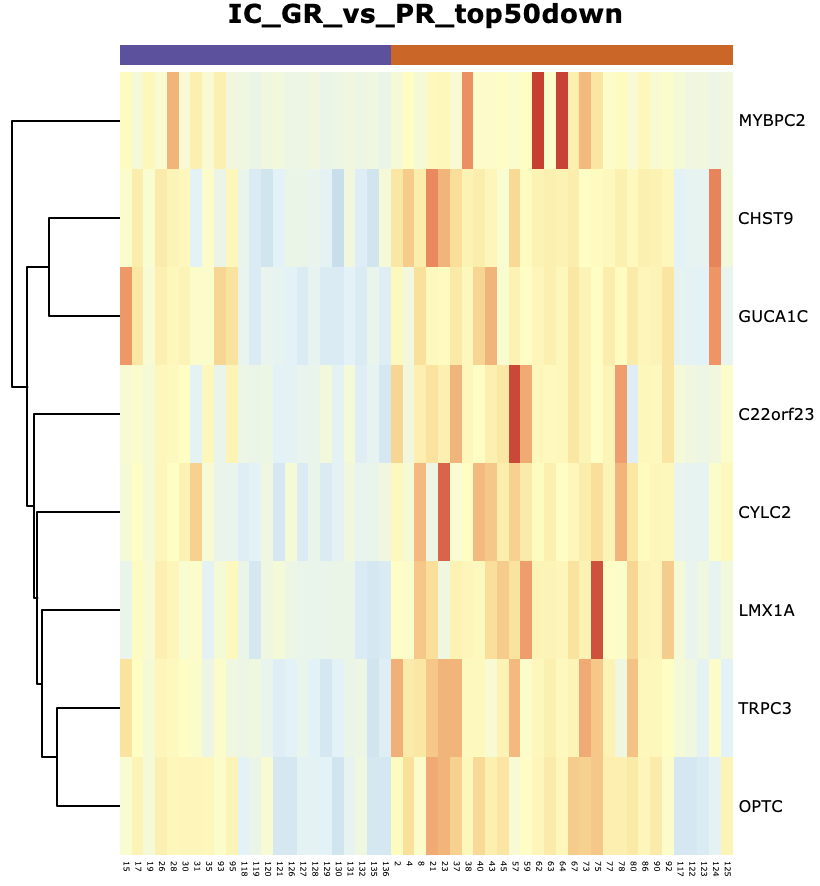
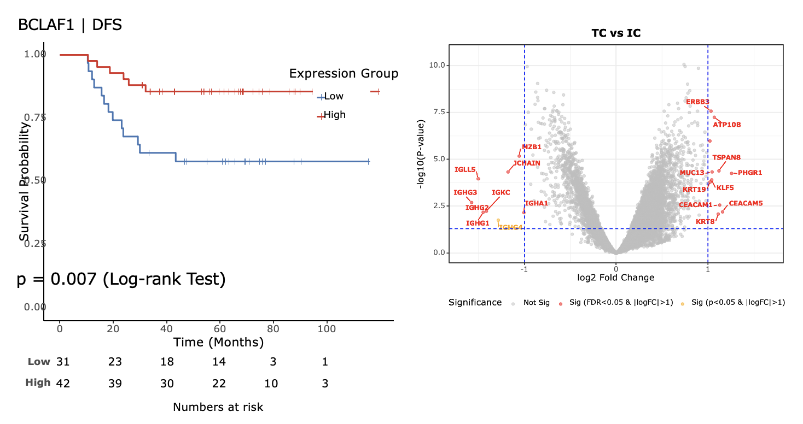
동탄성심병원 신은 교수님
분석 데이터
- 직장암 CCRT 반응군의 TC/IC spatial transcriptomics와 외부 검증 코호트 통합 데이터셋.
- 반응군과 생존 변수를 초기 단계에서 함께 정의하여, discovery와 validation 진행.
분석 목표 및 통계 분석
- 반응군 차이를 설명하는 DEG 선별 후, 생존 및 외부 코호트 예측 가능성까지 이어지는 후보유전자 축 도출 목표의 설계.
- 반응군 정의 후 limma + eBayes 기반 DEG 분석, heatmap/volcano 시각화, maxstat + Kaplan-Meier, ROC/Youden 순 확장.
결과 및 산출물
- DEG 통합표와 생존·검증 Figure를 한 세트로 정리하고, 생존 관련 결과는 69행(유니크 61유전자), 외부 binary validation 결과는 타깃별 1,071행 규모로 저장되어 후속 선별.
Case 7. 피부 장벽 및 혈관 반응과 피부 표면 지질체 상관 분석
강남성심병원 피부과 박진서 교수님
분석 데이터
- 민감피부 환자군과 대조군의 TEWL, SCH, erythema, porphyrin, SS-10, lipid species를 함께 측정한 통합 자료.
- 표본 수 대비 변수 수가 큰 high-dimensional 구조로, 단일 p-value보다 패턴 탐색과 후보 압축이 중요한 데이터셋.
분석 목표 및 통계 분석
- 피부 장벽·혈관 반응 지표와 lipid pattern 사이의 연결 구조 탐색 후, symptom domain별 후보 지질 축 도출을 위한 exploratory 분석 설계.
- Spearman correlation과 linear regression으로 1차 후보를 점검한 뒤, PCA, PLS-DA, PERMANOVA, network analysis, LASSO로 탐색 신호를 압축.
결과 및 산출물
- correlation heatmap과 symptom-lipid network를 구축하고, SS-10 item 대 112개 lipid 상관에서는
FDR q \< 0.05통과 lipid 부재, patient-control PLS-DA의PERMANOVA P = 0.753, R² = 0.007exploratory layer 중심 해석 정리.
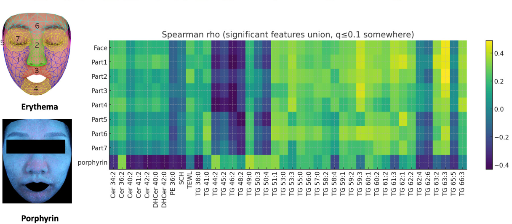
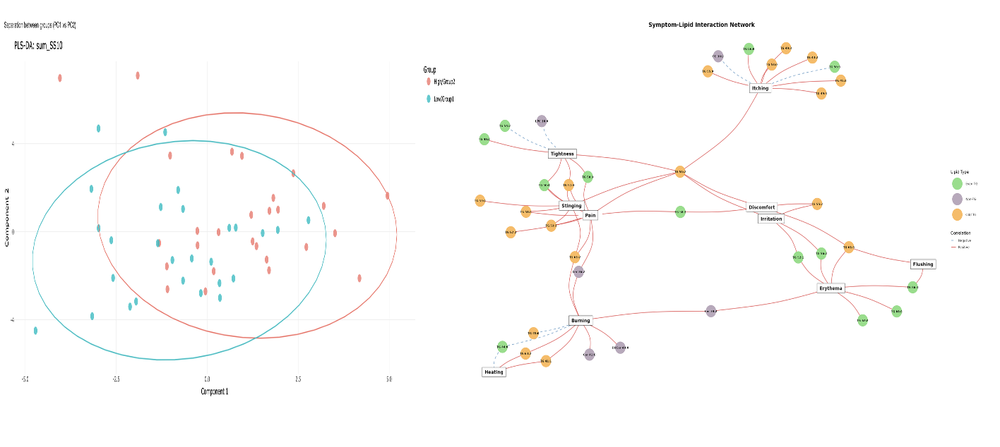
Case 8. qPCR miRNA 기반 폐암 진단 모델 연구
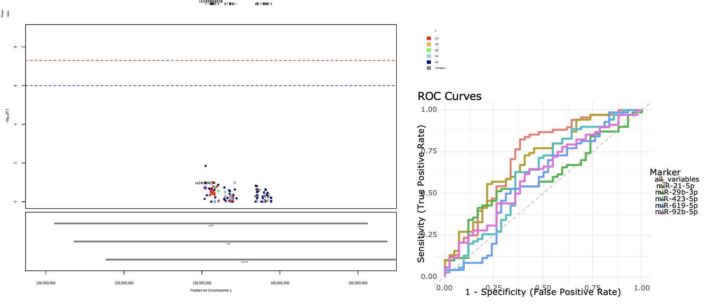
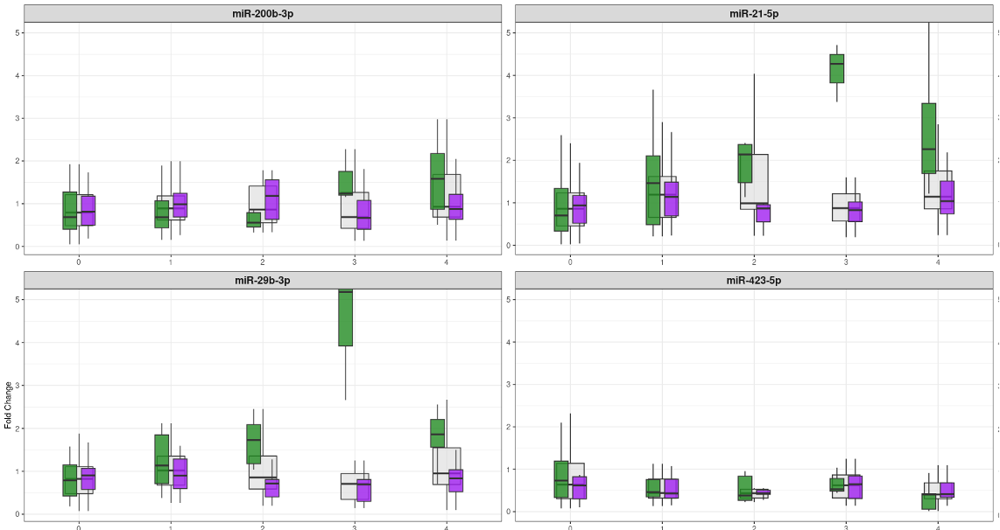
건국대병원 호흡기내과 이계영 교수님
분석 데이터
- qPCR miRNA, 연령, 흡연력, 병기, 실험 라운드 정보를 포함한 멀티오믹스 폐암 진단 자료.
- 라운드 차이와 샘플 정합화 이력이 함께 남아 있어, marker 성능 비교와 데이터 정제 이슈를 동시에 다룰 필요성.
분석 목표 및 통계 분석
- 단일 miRNA 유의성과 다중 marker panel 성능을 분리 평가한 뒤, 임상변수 보정 모델까지 확장하여 screening용 조합 후보 압축 설계.
- qPCR 정규화 후 Table 1, boxplot + pairwise test, logistic ROC/AUC, UpSet combination search, LASSO, Random Forest 순으로 비교 평가 진행.
결과 및 산출물
- 8개 후보 miRNA에서 3·4·5-marker 조합까지 비교하는 ROC Figure와 발표용 PPT·웹앱으로 연결하고, 최종 AUC·민감도·특이도는 raw qPCR/pins 자료 기준 재계산.
Case 9. 공단·심평원 빅데이터 분석
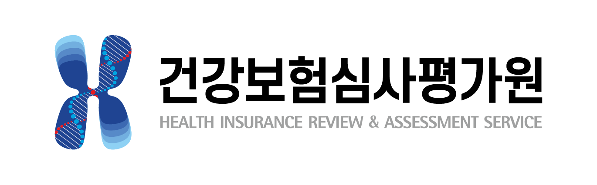
대한민국 공단(NHIS/NHID)·심평원(HIRA) 빅데이터는 전 국민 단위의 건강검진, 소득, 사망, 데이터를 포함한 종단형 인프라입니다.
최근 5년간 Diabetes Care, International Journal of Epidemiology, JAMA Network Open, JAMA Pediatrics 등에 NHIS/HIRA 기반 연구가 지속적으로 게재되고 있으며, 임상코호트와 유전체·오믹스 자료를 결합한 고품질 멀티오믹스 연구로 확장하기 적합합니다.
공단/심평원 데이터 활용 및 분석 사례
사례 1
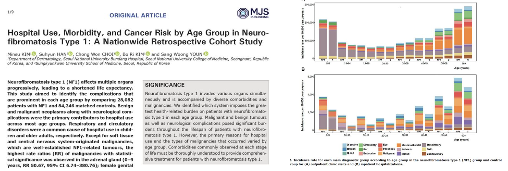
분당서울대병원 피부과 김보리 교수님
제1형 신경섬유종증 환자의 연령대에 따른 주요 합병증 발생 변화 연구
Acta Dermato-Venereologica (IF 4.3) 게재
사례 2
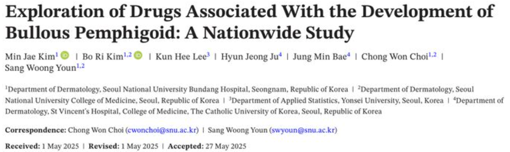
분당서울대병원 피부과 김보리 교수님
수포성 천포창(Bullous Pemphigoid, BP)의 발생과 연관된 위험 약물 규명
The Journal of Dermatology (IF 2.7) 게재
사례 3
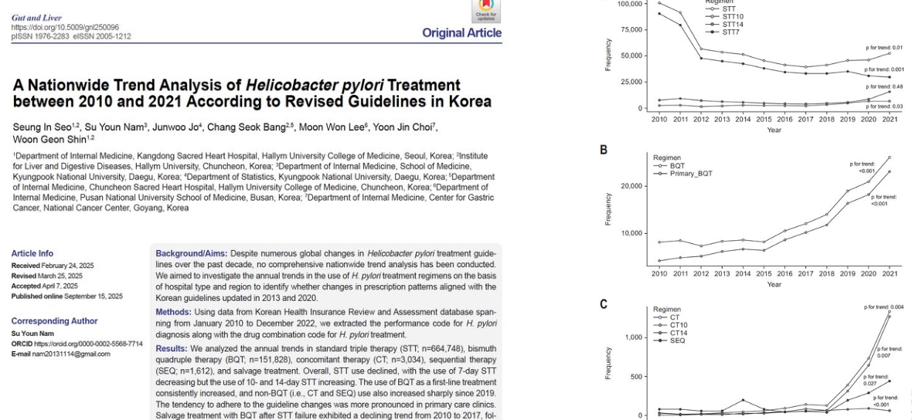
강동성심병원 소화기내과 서승인 교수님
H. pylori 제균치료의 실제 처방 경향의 전국적 조사
Gut and Liver (IF 3.2) 게재
Case 9. 공단·심평원 데이터 활용 멀티오믹스 분석 사례
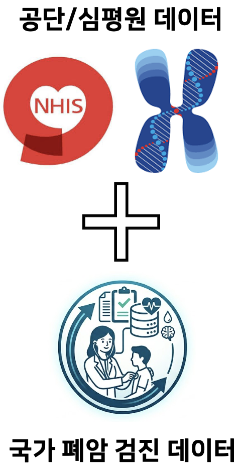
서울대학교병원 영상의학과 김형진 교수님
사례 1 국가폐암검진에서 발견된 위양성 결과와 사후 관리가 향후 폐암 발생률과 사망률에 미치는 영향 분석
Journal of Internal Medicine (IF 9.2) 게재
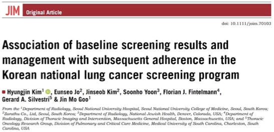
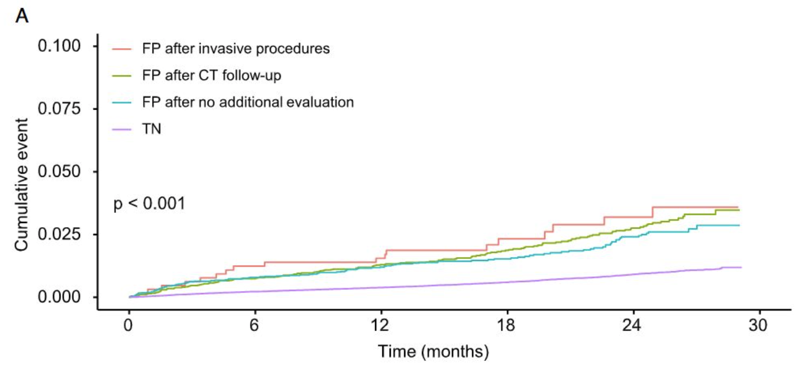
전체 표본 수 235,753명 대상(2019 ~ 2021)
사례 2 국가폐암검진에서 발견된 간질성 폐 이상(ILA, Intersitial Lung Abnormalities)의 예후적 가치 분석
The Journal of Dermatology (IF 2.7) 게재
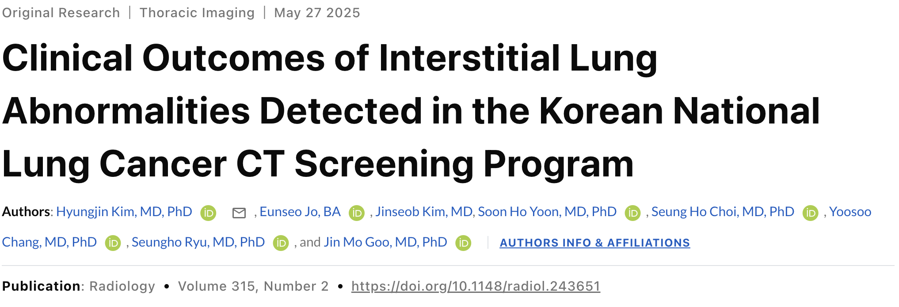
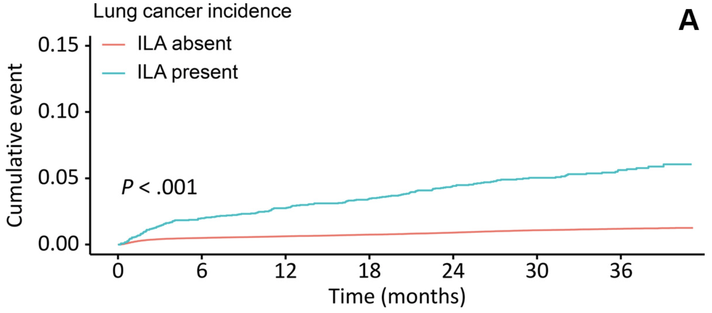
전체 표본 수 125,600명 대상(2019 ~ 2020)
국가폐암검진 CT 판독 데이터와 건강보험공단 국민 데이터을 결합한 복합적 의료 분석 사례 (기본 소득, 처방 및 확진, 생존여부 등)
분석 웹앱 제공 — jsmodule 기반 Shiny
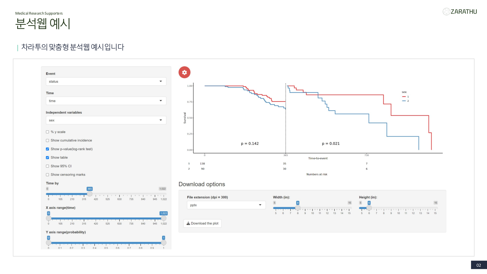
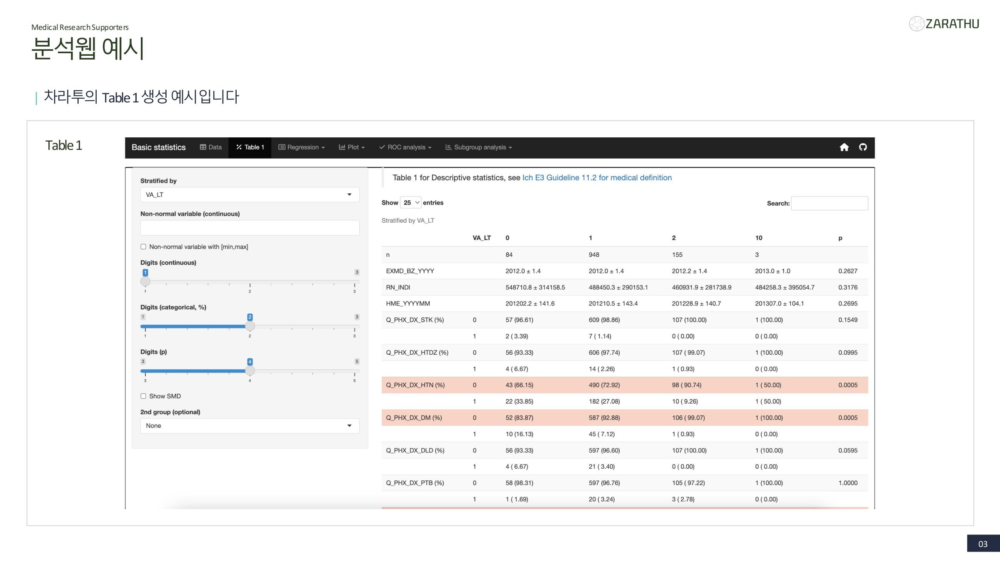
분석 웹앱 (계속)
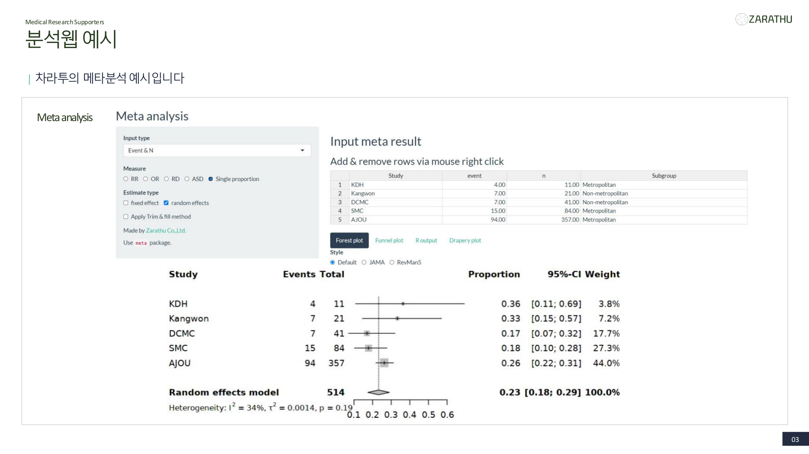
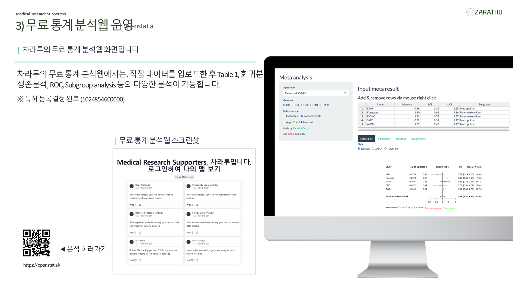
jsmodule 모듈 — tb1module2, logisticModule2, coxModule, kaplanModule, subgroupModule, rocModule, timerocModule, ggpairsModule2, jsPropensityGadget. 오믹스 프로젝트마다 연구자 전용 앱 동시 제공
뇌졸중 연구에 바로 적용 가능한 분석 전략
① Stroke subtype GWAS
- TOAST 아형 × genotyping array QC
- 1000G EAS imputation, regenie
- GIGASTROKE · STROMICS 메타분석 연계
- Manhattan / QQ Shiny 탐색
② 약물유전체 (Clopidogrel·Statin·NOAC)
- CYP2C19 star allele 자동 판정 (PharmVar)
- SLCO1B1 · ABCG2 statin PK
- CPIC level 1A 변이 패널 도출
- 변이 × PGS interaction 모델
③ 다층 통합 (MOFA · MR)
- scRNA-seq × Olink × genotyping MOFA
- Mendelian randomization (IVW, Egger)
- pQTL/eQTL → druggable target 필터
④ HIRA 연계 예후 모델
- 처방 지속도 / 재입원 / 출혈 코드 추출
- IPTW · time-varying Cox (tmerge)
- Forestploter 서브그룹 plot
- 재발·출혈·사망 통합 예측 모델
마무리 — 차라투가 함께할 수 있는 것
멀티오믹스는 “분석 기법의 나열”이 아니라, 임상 질문에서 출발해 재현 가능한 파이프라인·인과 검증·임상 적용까지 잇는 과정입니다. 차라투는 7년간 이 전 과정을 수십 개 프로젝트에서 실행해 왔습니다
제안 협력 형태
- 과제 기반 계약 — 특정 연구 단위 (GWAS, scRNA-seq 등)
- 연단위 계약 — 연구실 상시 분석 지원
- 기술 자문 — 설계·분석 파이프라인 리뷰
- 공동 저자 참여 — 분석가 SCI 공저 포함
제공 산출물 표준
- 원본·정제 데이터 중앙 관리
- 전체 분석 R 스크립트 (Git)
- 연구자 전용 Shiny 앱
- 논문용 표·그림(flextable / rvg PPT)
- 커뮤니티 상시 피드백
연락처 — office@zarathu.com | +82 70-7954-3712 | community.zarathu.com | openstat.ai

Zarathu Co., Ltd.